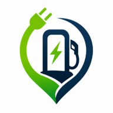
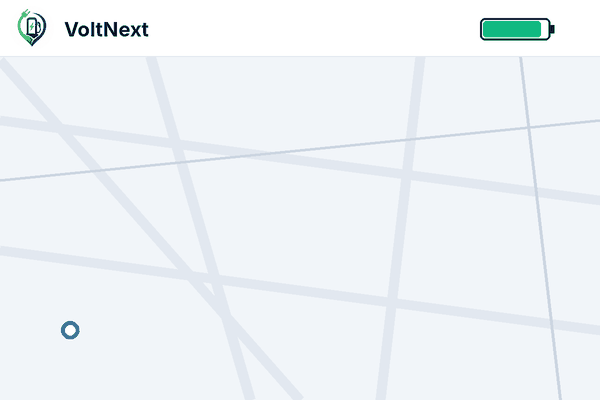

VoltNextOperatörlerin canlı doluluk ve fiyat verilerine ulaşın, aracınızın menziline göre şarj duraklı akıllı rotanızı oluşturun.

İstasyon aramaktan rota planlamaya, her adım tek uygulamada.
ZES, Trugo, Eşarj, Voltrun ve 10'dan fazla şarj operatörünün istasyonlarını tek uygulamadan görün.
İstasyona gitmeden önce soketin durumunu ve fiyatını anında görün.
Konumunuza ve aracınızın durumuna göre en uygun şarj noktalarını keşfedin.
Batarya seviyesi ve menzilinize göre rotanıza şarj durakları eklenir.
Favori istasyonunuz boşalınca ya da rotanızdaki bir nokta arızalanınca anında haberdar olun.
Aracınızı ekleyin, hesaplamalar ona göre yapılsın.
Size en yakın DC ve AC şarj noktaları haritada görünsün.
Batarya seviyesi ve menzile göre rota planlanır.
Rotanıza uygun istasyonlar eklenir, durum değişirse bildirim alırsınız.
Aylık ya da yıllık planla PRO'ya geçin, daha fazlasını açın.
VoltNext'i Google Play'den indirin, yakınınızdaki istasyonları hemen görün.
Google Play'den İndirVoltNext, MGA Creative tarafından geliştirilmektedir. mga@mgacreative.com